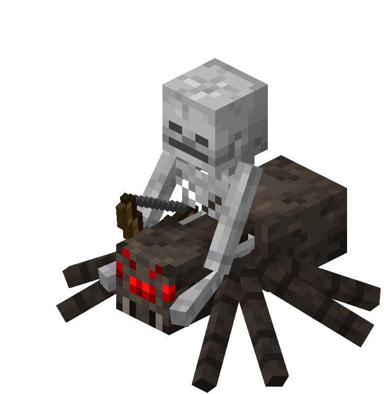

Spider Jockey to niezwykle rzadki i unikalny mob w grze Minecraft, który powstaje, gdy szkielet dosiada pająka.
Ta podwójna istota łączy w sobie szybkość wspinaczki i dalekosiężny atak łukiem.

1. Podwójny wróg: Składa się z dwóch niezależnych mobów występujących jako jeden organizm.
2. Wysoka rzadkość: Szansa na jego naturalny spawn w grze jest ekstremalnie niska.
3. Niezależne paski zdrowia: Każdy z mobów posiada własne punkty życia i może zginąć osobno.
4. Odporność na światło słoneczne: Pająk nie płonie w słońcu, co pozwala szkieletowi przetrwać dzień.
5. Zdolność do współpracy: Szkielet strzela z łuku, podczas gdy pająk manewruje i ściga gracza.
1. Wspinanie się po pionowych ścianach dzięki właściwościom pająka.
2. Atakowanie z dystansu za pomocą nieomylnych strzał szkieletu.
3. Szybkie skakanie i pokonywanie przeszkód terenowych.
4. Widzenie gracza w całkowitej ciemności.
5. Zadawanie obrażeń zarówno w zwarciu (pająk), jak i z daleka (szkielet).
6. Ściganie celu ze zwiększoną mobilnością dzięki połączonej prędkości.
W wersjach Bedrock Edition istnieje rzadka odmiana tego moba, w której szkielet może dosiadać także jaskiniowego pająka (Cave Spider Jockey).